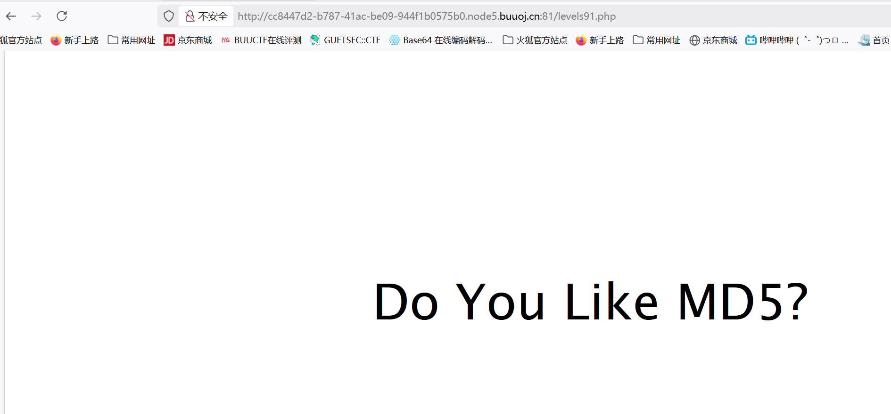

BUUCTF-Web-[BJDCTF2020]Easy MD5
本文为记录个人信安小白的刷题路程，大佬勿喷，也同时希望文章能对您有所帮助
MD5
md5()是PHP中用于计算字符串MD5哈希值的函数。MD5是一种广泛使用的加密哈希函数，可生成128位（16字节）的哈希值，通常表示为32个十六进制数字。
1 | string md5 ( string $str , bool $raw_output = false ) |
不可逆：
无法从哈希值反向计算出原始数据。
易碰撞：
不同输入可能产生相同 MD5 值。
打开靶机，发现一个查询入口，随便输入点东西看看
发现是GET传参password但是没有任何回显，
试试特殊符号输入，
查看源码也没有获得什么有用的信息，
也没有任何回显，用burp抓包看看有没有其他信息，
查看请求头发现hint字段，在ctf中hint通常代表提示，
1 | hint：select * from 'admin' where password=md5($pass,true) |
看到这个典型的sql查询语句就想起了万能密码，
如果通过md5函数之后返回的字符串是'or' 1的话，就会闭合构造成：
1 | select * from 'admin' where password=''or '1' |
在MYSQL里，在用作布尔型判断时，以数字开头的字符串会被当做整型数。
要注意的是这种情况是必须要有单引号括起来的，比如password=’xxx’ or ‘1xxx’，就相当于password=’xxx’ or 1 ，也就相当于password=’xxx’ or true，所以返回值就是true。（xxx代表任意字符）
当然如果只有数字的话，就不需要单引号，比如password=’xxx’ or 1，那么返回值也是true。
正常来说需要构造脚本碰撞出我们需要的字符串，但是耗时长难度大，我们直接使用常用特殊字符ffifdyop，
md5()函数哈希后变成276f722736c95d99e921722cf9ed621c，
这串哈希值前段部分刚好又是'or' 6的哈希值前段部分，相当于构造了：
1 | select * from 'admin' where password=''or '6xxx' |

来到一个新的界面，查看源码，
1 | <!-- |
方法一：使用数组绕过
如果代码没有进行类型检查，传递数组会导致 MD5 返回 NULL，两个NULL值也是相等
方法二： 使用 0e 开头的魔术哈希
1 | ?a=240610708&b=QNKCDZO |
这两个字符串不同但MD5哈希值相同（都以0e开头，PHP 弱类型比较时会视为科学计数法的0）。
同样的绕过方式
获得flag